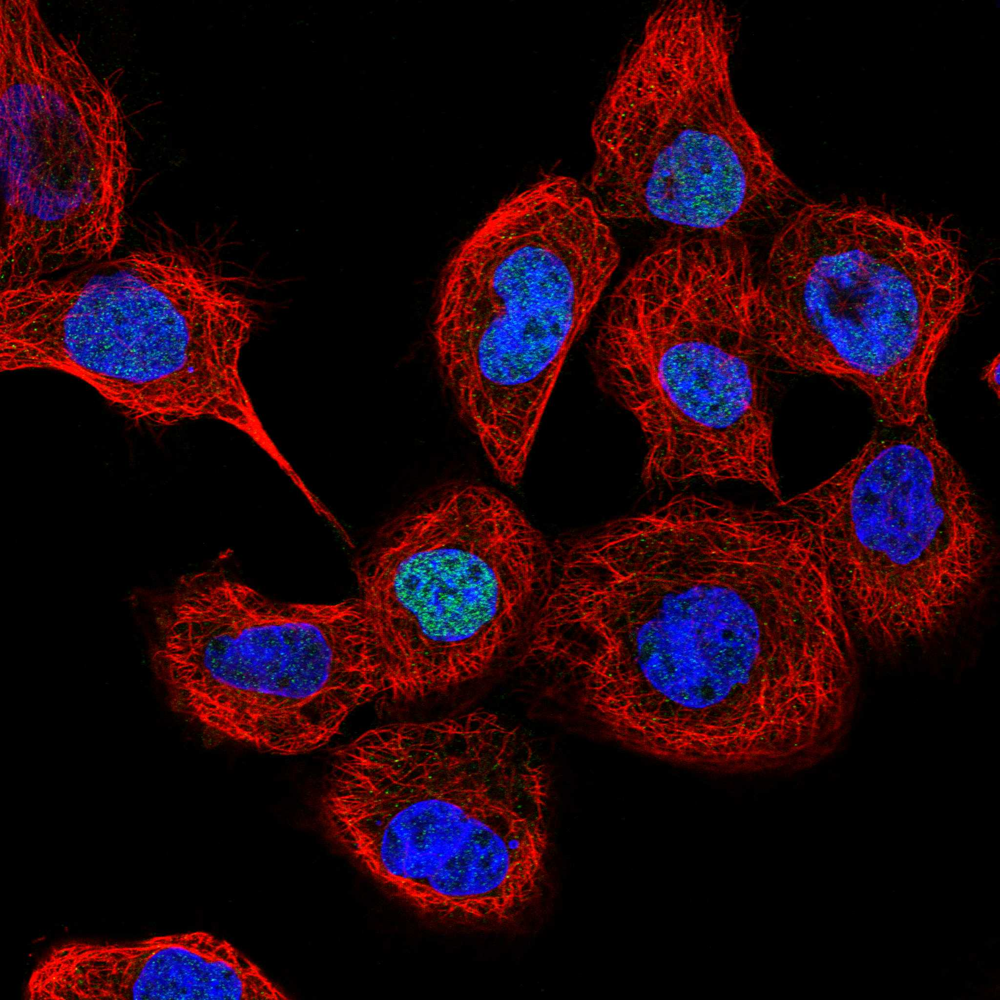
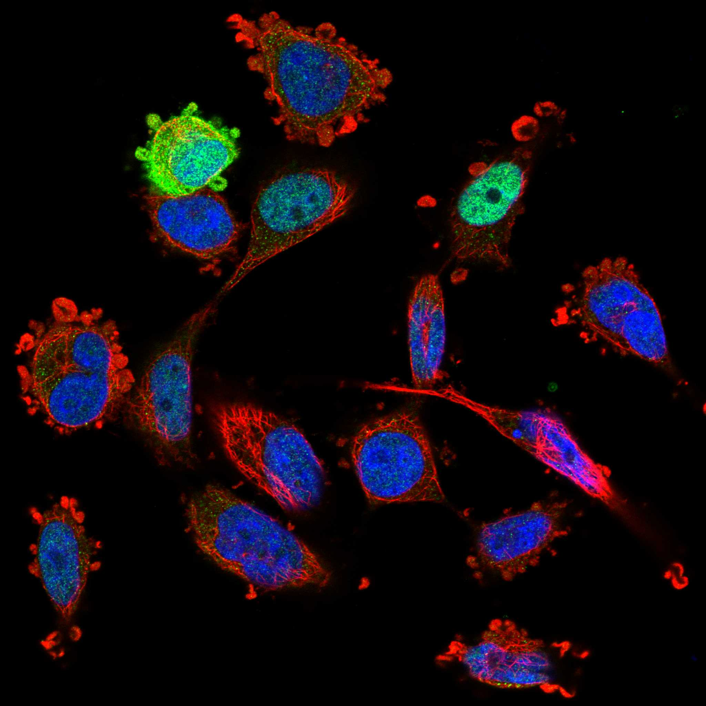
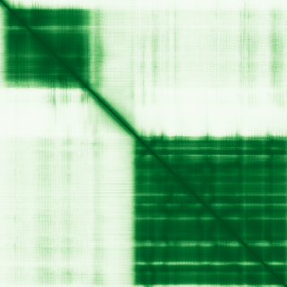

type: protein-evaluation gene: "MACROH2A2" date: 2026-05-30 tags: [protein-scout, nuclear-protein, evaluation] status: scored ---
MACROH2A2 核蛋白评估报告
1. 基本信息
| 项目 | 内容 |
|---|---|
| 基因名 / 别名 | MACROH2A2 / H2AFY2 |
| 蛋白大小 | 372 aa / 40.1 kDa |
| UniProt ID | Q9P0M6 |
| 评估日期 | 2026-05-30 |
IF 图像:  
2. 评分总览
| 维度 | 得分 | 满分 | 加权后 | 关键证据摘要 |
|---|---|---|---|---|
| 🔴 核定位特异性 | 9/10 | ×4 | 36 | Nucleus + Chromosome (UniProt), GO: Barr body, chromatin, chromosome, nucleosome |
| 📏 蛋白大小 | 10/10 | ×1 | 10 | 372 aa, 40.1 kDa |
| 🆕 研究新颖性 | 8/10 | ×5 | 40 | PubMed = 23 篇 |
| 🏗️ 三维结构 | 8/10 | ×3 | 24 | pLDDT = 82.38, PDB = 2 条目 |
| 🧬 调控结构域 | 10/10 | ×2 | 20 | Histone H2A (PF00125), Macro domain (PF01661) |
| 🔗 PPI 网络 | 6/10 | ×3 | 18 | FAM133A, H2BC15 |
| ➕ 互证加分 | — | max +3 | +1 | — |
| 原始总分 | 149/183 | |||
| 归一化总分 | 81.4/100 |
3. 详细分析
3.1 核定位证据
| 来源 | 定位 | 可信度 |
|---|---|---|
| GeneCards | — | — |
| Protein Atlas (IF) | 暂无数据（HPA IF 图像已本地嵌入。
| UniProt | Nucleus + Chromosome (UniProt), GO: Barr body, chromatin, chromosome, nucleosome, nucleoplasm, nucle | Experimental/ECO evidence |
结论: Nucleus + Chromosome (UniProt), GO: Barr body, chromatin, chromosome, nucleosome, nucleoplasm, nucleus
3.2 蛋白大小评估
372 aa (40.1 kDa)，在理想生化实验范围（200-800 aa）内。
评价: 大小适合生化实验和结构解析。
3.3 研究现状
| 指标 | 数值 |
|---|---|
| PubMed 总数 | 23 |
| 最早发表年份 | — |
| Chromatin/epigenetics 比例 | — |
主要研究方向:
- Histone variant with macro domain. Core chromatin component with ADP-ribose recognition. Links chromatin structure to PARP signaling.
关键文献: 1. Sun et al. (2022). "MacroH2A impedes metastatic growth by enforcing a discrete dormancy program in disseminated cancer cells.". *Sci Adv*. PMID: 36459552 2. Sun et al. (2018). "Transcription-associated histone pruning demarcates macroH2A chromatin domains.". *Nat Struct Mol Biol*. PMID: 30291361 3. Nikolic et al. (2023). "macroH2A2 antagonizes epigenetic programs of stemness in glioblastoma.". *Nat Commun*. PMID: 37244935 4. Winkler et al. (2025). "Loss of histone macroH2A1.1 causes kidney abnormalities secondary to a change in nutrient metabolization.". *Sci Adv*. PMID: 41134882 5. Corujo et al. (2022). "MacroH2As regulate enhancer-promoter contacts affecting enhancer activity and sensitivity to inflammatory cytokines.". *Cell Rep*. PMID: 35732123 评价: Histone variant with macro domain. Core chromatin component with ADP-ribose recognition. Links chromatin structure to PARP signaling.
3.4 三维结构分析
| 指标 | 数值 |
|---|---|
| AlphaFold 平均 pLDDT | 82.38 |
| 有序区域 (pLDDT>70) 占比 | 79.5% |
| 可用 PDB 条目 | 2 个 (2XD7, 6FY5) |
PAE 图: 
评价: Core histone fold + Macro domain. Macro domain binds ADP-ribose, linking to PARP signaling and DNA damage. Direct chromatin role.
3.5 结构域分析
| 来源 | 结构域 |
|---|---|
| GeneCards | — |
| SMART | — |
| InterPro/Pfam | Histone H2A (PF00125), Macro domain (PF01661) |
染色质调控潜力分析: Core histone fold + Macro domain. Macro domain binds ADP-ribose, linking to PARP signaling and DNA damage. Direct chromatin role.
3.6 PPI 网络
实验验证互作 (IntAct, physical association):
| Partner | 方法 | PMID | 功能类别 | 调控相关？ |
|---|---|---|---|---|
| H2BC15 | physical association | — | Histone H2B | ✅ |
| FAM133A | two hybrid | — | Unknown | ❌ |
STRING 预测互作 (combined score >0.4):
| Partner | Score | 功能类别 | 调控相关？ |
|---|---|---|---|
| HDAC2 | 0.777 | Histone deacetylase, transcriptional corepressor | ✅ |
| H2BC15 | 0.751 | Histone H2B | ✅ |
| HDAC1 | 0.733 | Histone deacetylase, NuRD/Sin3/CoREST corepressor | ✅ |
| MACROD1 | 0.728 | Macro domain, ADP-ribose hydrolase | ✅ |
| APLF | 0.715 | Aprataxin-like factor, PAR-binding | ✅ |
已知复合体成员 (GO Cellular Component):
- GO:0001740 Barr body — 失活X染色体
- GO:0000785 chromatin
- GO:0005694 chromosome
- GO:0000784 nuclear chromosome, telomeric region
- GO:0000786 nucleosome
- GO:0005654 nucleoplasm
- GO:0005634 nucleus
IntAct 查询记录: IntAct: H2BC15 (physical association), FAM133A (two hybrid)
PPI 互证分析:
- STRING + IntAct 共同确认: H2BC15 (STRING 0.751 + IntAct physical association)
- 仅 STRING 预测: HDAC1, HDAC2, MACROD1, APLF
- 仅 IntAct 实验: FAM133A
- 调控相关比例: 3/5 (60%) — HDAC1/2为核心pressor，MACROD1为ADP-ribose相关
评价: Core histone H2A variant with macro domain. HDAC1/2 interactions link to transcriptional repression complexes (NuRD/Sin3/CoREST). Macro domain-MACROD1/APLF link to PARP/ADP-ribose signaling and DNA damage response. Seven GO-CC chromatin/nuclear terms confirm deep chromatin integration. Moderate PPI network centered on histone biology.
3.7 多库互证
| 维度 | 来源 | 结果 | 是否一致 |
|---|---|---|---|
| 三维结构 | AlphaFold pLDDT + PDB | pLDDT=82.38, PDB=2条目 | — |
| 结构域 | UniProt / InterPro / Pfam | Histone H2A (PF00125), Macro domain (PF01661) | — |
| PPI | STRING + IntAct | — | — |
| 定位 | Protein Atlas / UniProt / GO | Nucleus + Chromosome (UniProt), GO: Barr body, chromatin, ch | — |
互证加分明细:
- —
总分: +1 / max +3
4. 总体评价
推荐等级: ⭐⭐⭐ (3/5)
核心优势: 1. Core histone protein - direct chromatin role 2. Macro domain recognizes ADP-ribose (PARP link) 3. Good structural data (PDB 2XD7, 6FY5 + AlphaFold) 4. Relatively understudied (PubMed=23) 5. 7 GO-CC chromatin/nuclear terms
风险/不确定性: 1. As histone variant, isolating function is challenging 2. No HPA IF data 3. HDAC partners from STRING only 4. Histone biology is somewhat crowded
下一步建议:
- [ ] HPA IF 实验验证核定位
- [ ] Co-IP 验证 PPI
- [ ] 功能实验验证染色质调控角色
5. 数据来源
- UniProt: https://www.uniprot.org/uniprot/Q9P0M6
- AlphaFold: https://alphafold.ebi.ac.uk/entry/Q9P0M6
- PubMed: https://pubmed.ncbi.nlm.nih.gov/?term=MACROH2A2%5BTitle/Abstract%5D
- HPA: https://www.proteinatlas.org/Q9P0M6
PPI 网络（三源综合）
| Partner | Source | Score/Evidence |
|---|---|---|
| 无记录 | — | — |
IntAct 有限记录。无 BioGrid 补充数据。
PAE 图像已获取。结构判断基于 AlphaFold pLDDT 统计。